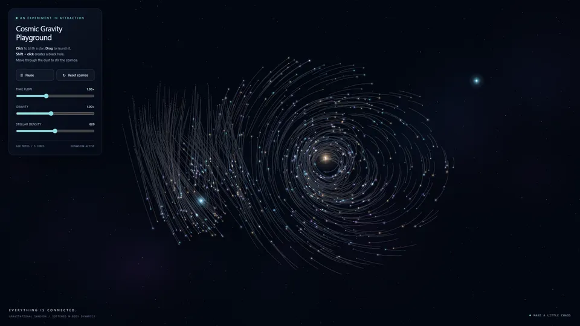
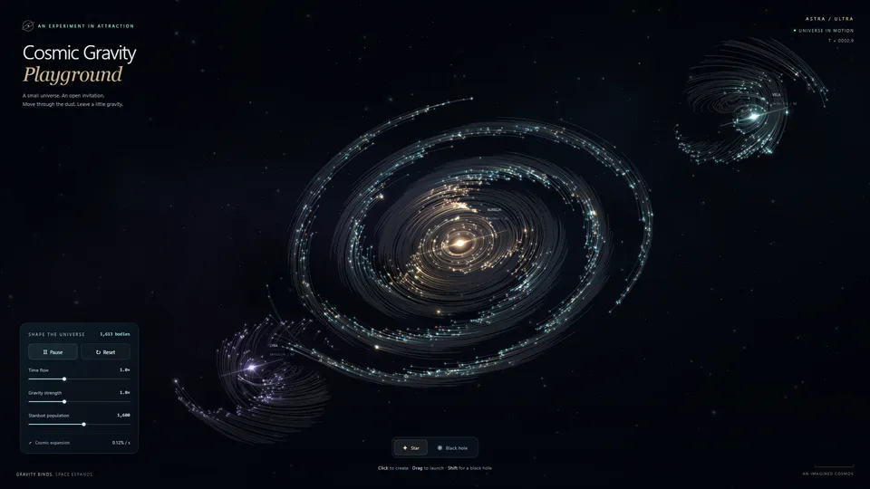
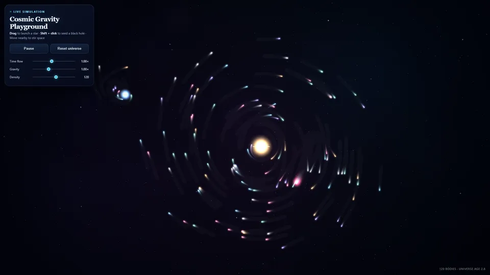
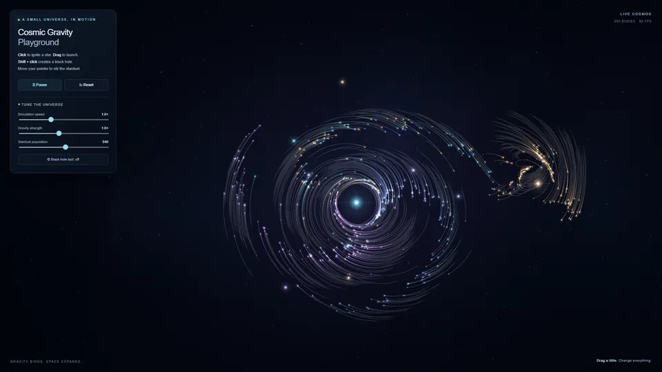
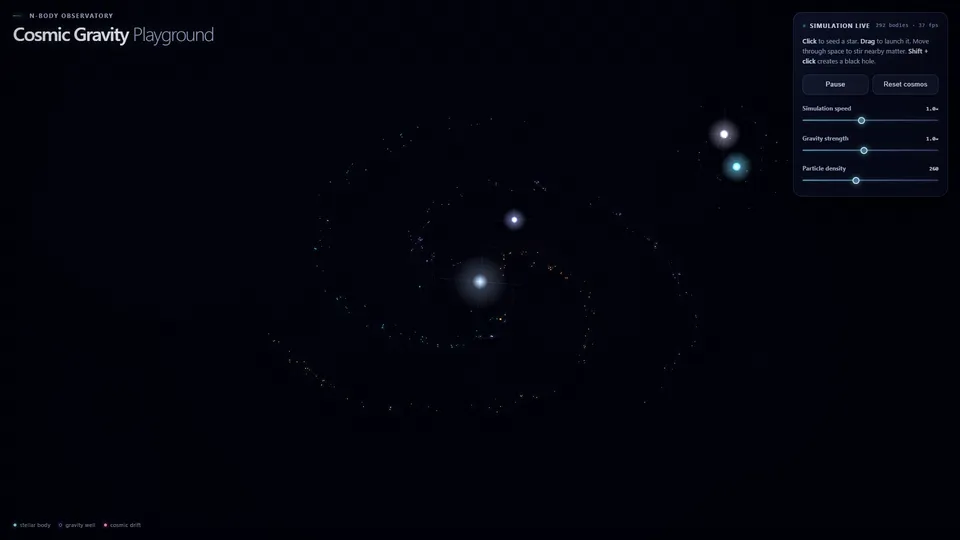
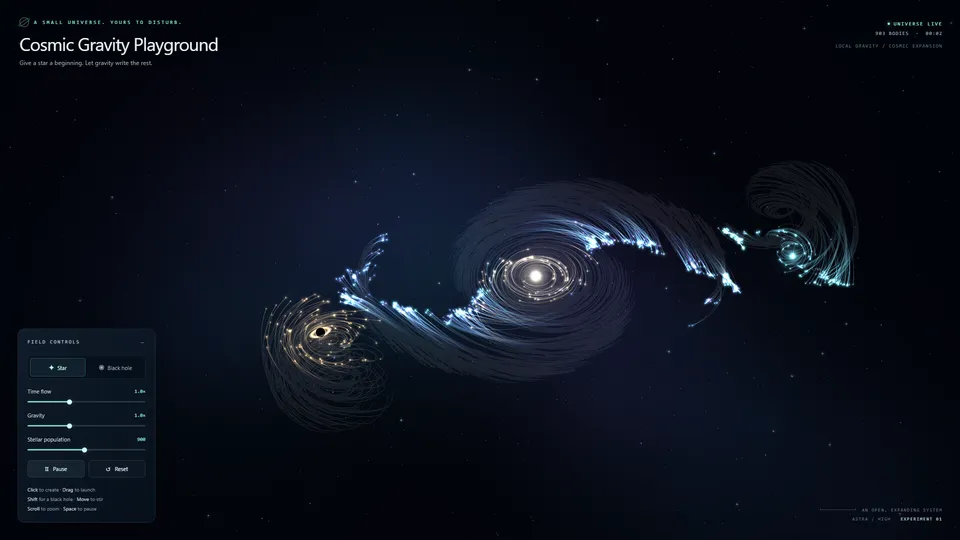
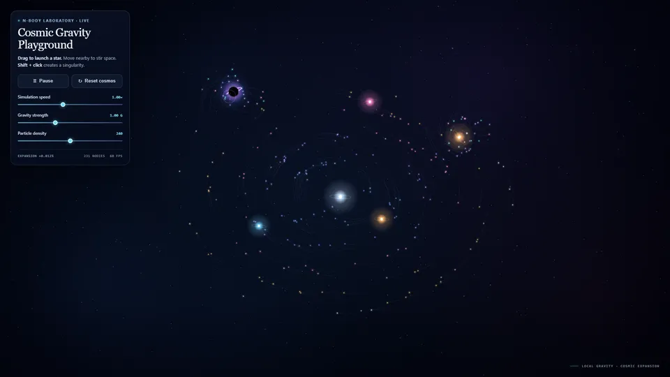
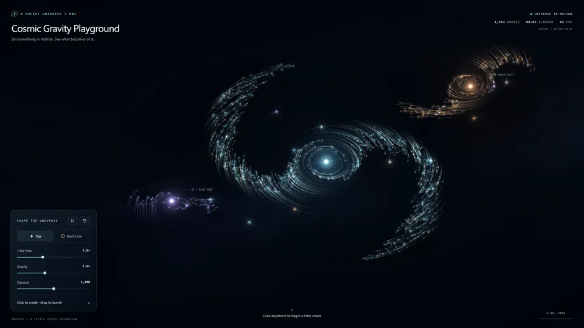
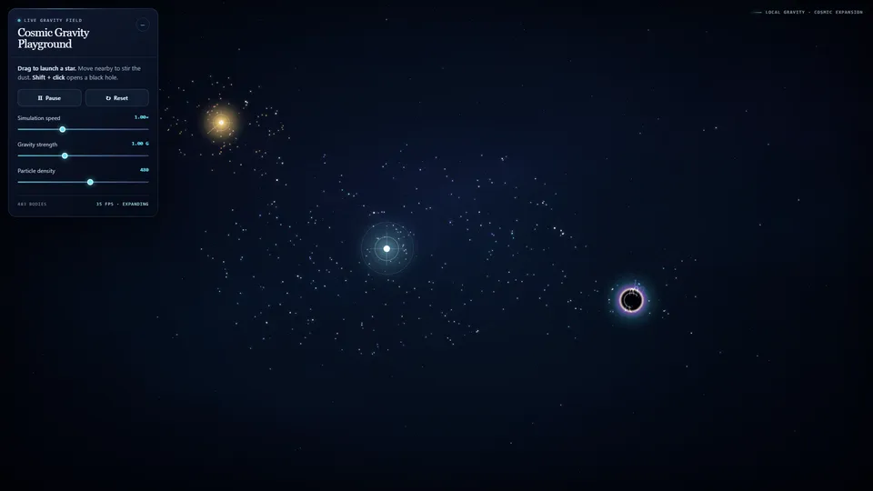
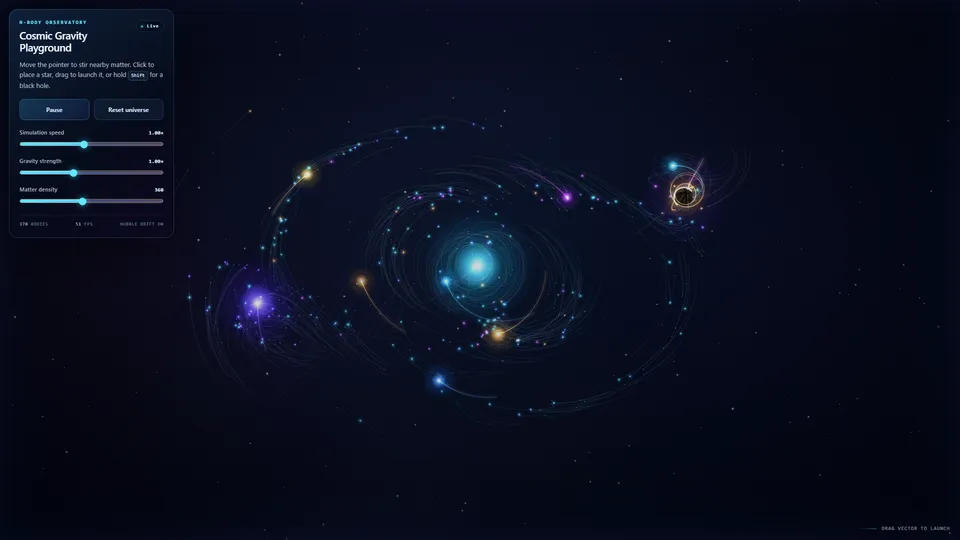

Play simulation ↗PatterTech / Model Tests
Same brief.
Different universes.
What changes when you give the same task to different models? Open the results and see for yourself.

Experiment 01
Cosmic Gravity
Ten original simulations. Two models. Five effort levels.
Cosmic Gravity
Explore all 10
Choose an effort level, compare the scenes, then open either model's original simulation.

Play simulation ↗Sol Light

Play simulation ↗Astra Medium

Play simulation ↗Sol Medium

Play simulation ↗Astra High

Play simulation ↗Sol High

Play simulation ↗Astra Extra High

Play simulation ↗Sol Extra High
Astra Ultra
Featured
Play simulation ↗Sol Ultra
All ten original files
Screenshots show real default scenes. The simulations use randomness, so each launch will look different.
The brief asks for a self-contained HTML gravity simulation. No libraries, no external assets, and plenty of room for the model to make its own decisions.
These are practical examples, not a formal benchmark. Historical runs used different working contexts, and the earliest four predate the naming paragraph.
Understand the comparison →